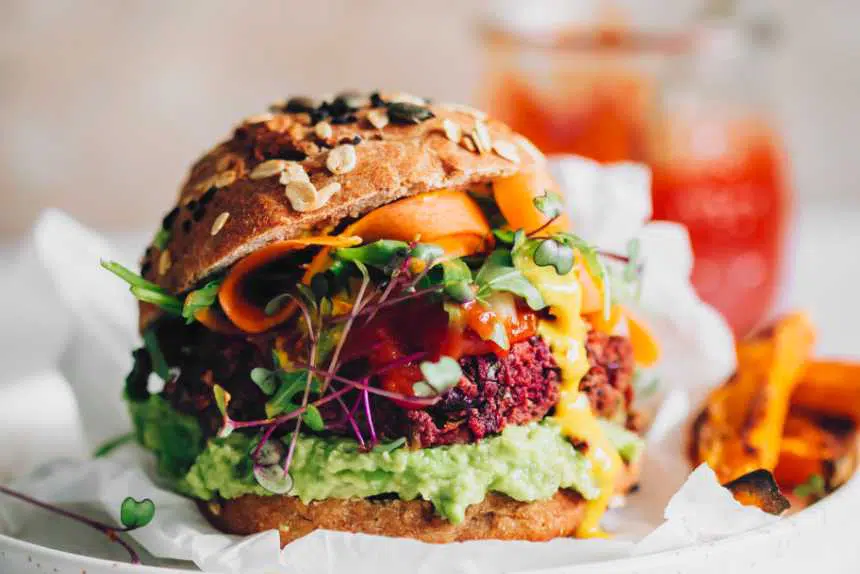

Burger

Flavor-packed and beautifully colored, our vegan kidney bean burger is the star at every BBQ,
picnic or dinner table! Seriously hearty and secretly healthy, it's crispy, protein-rich,
carnivore-approved, and so easy to make.
Ingredients
- Burger patties
- cups leafy greens (60 g)
- 1 pack of cheese slices
- 1 avocados, smashed
- 1 tomato
- 2 red onion
- 2 carrots, cut into ribbons with a mandolin
- ¼ cup microgreens (10 g)
- 3 tbsp mustard
- 3 tbsp BBQ sauce
- 4 whole wheat burger buns
Direction
- Roast the patties
- In a large pot, heat 2 tablespoons oil over medium heat.
- Heat the buns up
- Prepare the veggies
- Assemble the burgers
Notes
Dress with leafy greens, sliced carrots, microgreens and top with mustard and smoky BBQ sauce. Enjoy warm!
Return